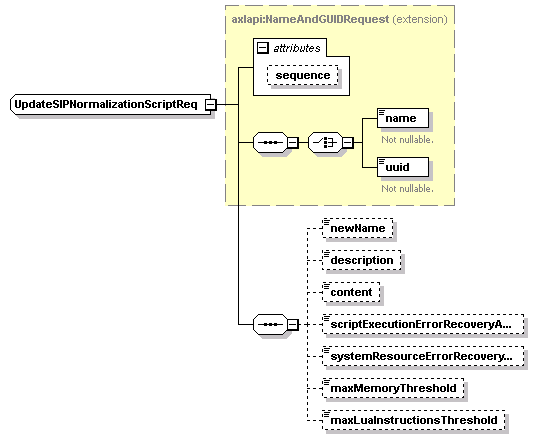

| diagram |
 |
| namespace |
http://www.cisco.com/AXL/API/10.5 |
| type |
extension of axlapi:NameAndGUIDRequest |
| properties |
| base | axlapi:NameAndGUIDRequest |
|
| children |
name uuid newName description content scriptExecutionErrorRecoveryAction systemResourceErrorRecoveryAction maxMemoryThreshold maxLuaInstructionsThreshold |
| used by |
|
| attributes |
| Name | Type | Use | Default | Fixed | Annotation | | sequence | xsd:unsignedLong | optional | | | |
|
| source |
<xsd:complexType name="UpdateSIPNormalizationScriptReq">
<xsd:complexContent>
<xsd:extension base="axlapi:NameAndGUIDRequest">
<xsd:sequence>
<xsd:element name="newName" type="xsd:string" nillable="false" minOccurs="0" maxOccurs="1"/>
<xsd:element name="description" type="xsd:string" nillable="false" minOccurs="0" maxOccurs="1"/>
<xsd:element name="content" type="xsd:string" nillable="false" minOccurs="0" maxOccurs="1"/>
<xsd:element name="scriptExecutionErrorRecoveryAction" type="axlapi:XSIPScriptErrorHandling" default="Message Rollback Only" nillable="false" minOccurs="0" maxOccurs="1"/>
<xsd:element name="systemResourceErrorRecoveryAction" type="axlapi:XSIPScriptErrorHandling" default="Disable Script" nillable="false" minOccurs="0" maxOccurs="1"/>
<xsd:element name="maxMemoryThreshold" type="xsd:string" default="50" nillable="false" minOccurs="0" maxOccurs="1"/>
<xsd:element name="maxLuaInstructionsThreshold" type="xsd:string" default="1000" nillable="false" minOccurs="0" maxOccurs="1"/>
</xsd:sequence>
</xsd:extension>
</xsd:complexContent>
</xsd:complexType> |